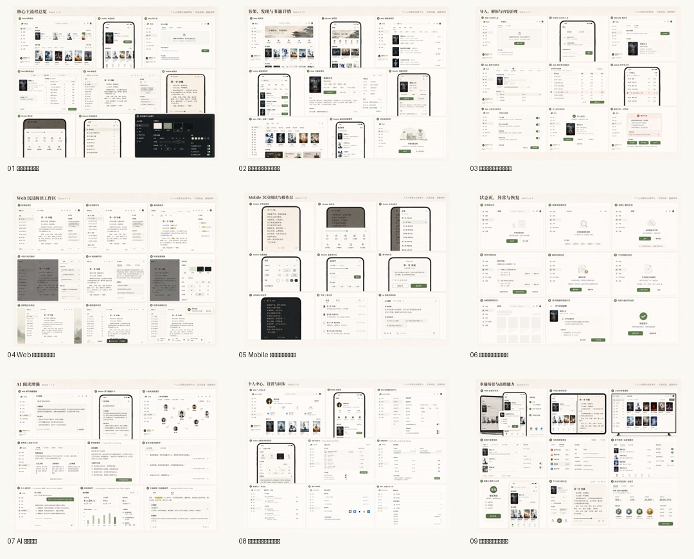

设计基线：v1.9 page-by-page polished。当前随包视觉参考来自可读取的 v0.2 真矢量 SVG。
README · Design Tokens · 组件清单 · 验收清单
| ID | 页面 | 路由 | 平台 | 规格 | SVG |
|---|---|---|---|---|---|
| M01 | 移动端书架首页 | /library | mobile | page-spec | svg ref |
| M02 | 移动端导入解析页 | /import | mobile | page-spec | svg ref |
| M03 | 移动端解析预览页 | /import/preview/:taskId | mobile | page-spec | svg ref |
| M04 | 移动端沉浸阅读态 | /reader/:bookId | mobile | page-spec | svg ref |
| M05 | 移动端阅读菜单态 | /reader/:bookId | mobile | page-spec | svg ref |
| M06 | 移动端阅读设置态 | /reader/:bookId | mobile | page-spec | svg ref |
| M07 | 移动端目录抽屉态 | /reader/:bookId | mobile | page-spec | svg ref |
| M08 | 移动端夜间阅读态 | /reader/:bookId | mobile | page-spec | svg ref |
| M09 | 移动端 AI 面板态 | /reader/:bookId | mobile | page-spec | svg ref |
| M10 | 移动端空状态/离线态 | /library or /reader/:bookId | mobile | page-spec | svg ref |
| M11 | 移动端书籍详情页 | /book/:bookId | mobile | page-spec | svg ref |
| M12 | 移动端阅读进度面板 | /reader/:bookId | mobile | page-spec | svg ref |
| M13 | 移动端书签笔记页 | /notes or /reader/:bookId/notes | mobile | page-spec | svg ref |
| M14 | 移动端发现搜索页 | /search | mobile | page-spec | svg ref |
| M15 | 移动端长文本压力页 | /reader/:bookId | mobile | page-spec | svg ref |
| M16 | 移动端极窄屏压力页 | /reader/:bookId | mobile | page-spec | svg ref |
| W01 | Web 书架首页 | /library | web | page-spec | svg ref |
| W02 | Web 导入解析页 | /import | web | page-spec | svg ref |
| W03 | Web 解析预览页 | /import/preview/:taskId | web | page-spec | svg ref |
| W04 | Web 三栏阅读工作区 | /reader/:bookId | web | page-spec | svg ref |
| W05 | Web 夜间阅读设置页 | /reader/:bookId | web | page-spec | svg ref |
| W06 | Web 解析质量/状态页 | /import/preview/:taskId | web | page-spec | svg ref |
| W07 | Web 书籍详情页 | /book/:bookId | web | page-spec | svg ref |
| W08 | Web 发现搜索页 | /search | web | page-spec | svg ref |
| W09 | Web 设置与存储页 | /settings | web | page-spec | svg ref |
| W10 | Web 笔记与 AI 资产页 | /notes | web | page-spec | svg ref |
| W11 | Web 宽屏压力页 | /reader/:bookId | web | page-spec | svg ref |
已新增 source-boards/，包含用于生成/复刻 SVG 的九张源套图 PNG、原始 PNG 备份、配对 manifest 与颜色/背景差异报告。

{kind=link}
{kind=link}
{kind=link}
{kind=link}
{kind=link}
{kind=link}
{kind=link}